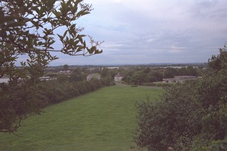

Trench Inclined Plane was in use until the 1920s, and there are several photos of it. The Blue Pig at its foot remains, but everything else has been destroyed by modern development. An earlier photo from this point shows a forest of factory chimneys beyond the foot of the incline.